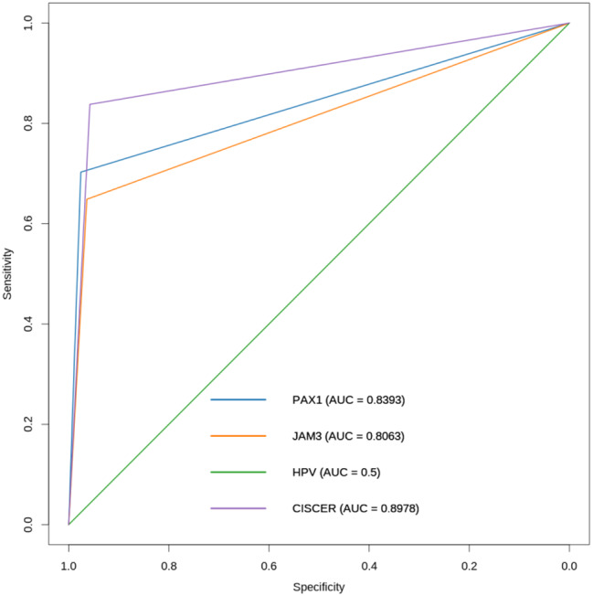
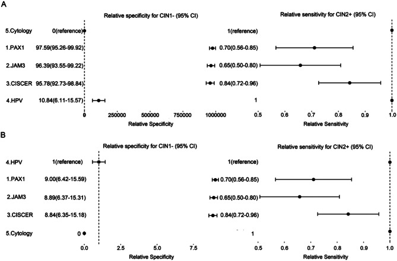

1Background & Objective
- ASC-US burden: >50% of cytological abnormalities in China; <30% harbor high-grade lesions — over/under-diagnosis risk.
- Triage gap: cytology low sensitivity; HPV referral rate 91.1% with only 10.8% specificity for CIN2+.
- Objective: evaluate CISCER® PAX1m/JAM3m for triaging women with ASC-US.
- Why methylation: objective, reproducible, HPV-independent marker of malignant transformation.
2Study Design & Cohort
322
ASC-US women
203
with histology
37
CIN2+ (20 CIN2 · 16 CIN3 · 1 AdCa)
HPV-DNA+
cytology ASC-US+
PAX1m/JAM3m
- Setting: Zhejiang Provincial People's Hospital, 2022.3–2024.1; ethics No. 2021SJ020.
3Methylation Signal by Grade
- Dose–response: ΔCt falls sharply from CIN1 to CIN2 (P<0.001); stays low in CIN3; adenocarcinoma ΔCtPAX1=1.78, ΔCtJAM3=3.4.
- Low-grade specificity: in no-CIN/CIN1, PAX1 or JAM3 positive only 2.4% (4/166).
- Positivity rises: CIN2 50% both genes; CIN3 50% both genes (Fig. 2C).
2.4%
positive · no-CIN/CIN1
80%
positive · CIN2
87.5%
positive · CIN3
4Results — ROC, Forest & Referral

Fig. 3 ROC of triage methods for CIN2+ in ASC-US.

Fig. 4 Forest: relative specificity of methylation 8.84× HPV (6.35–15.18) at comparable sensitivity.
- Referral: HPV 91.1% → CISCER 18.7%; in hr-HPV+ women −79.5% (147/185).
- Risk stratification: CIN3+ risk CISCER(+) 39.5% vs CISCER(−) 1.2%.
- Best in non-16/18: CISCER Se 90.5% (vs 75.0% in HPV16/18+).
39.5%
CIN3+ risk · CISCER(+)
1.2%
CIN3+ risk · CISCER(−)
| Subgroup | Se % | Sp % |
|---|---|---|
| Non-16/18 hrHPV+ | 90.5 | 95.6 |
| HPV16/18+ | 75.0 | 94.1 |
5Performance — CIN2+ (n=37)
| Test | Se % | Sp % | PPV % | NPV % | OR |
|---|---|---|---|---|---|
| CISCER | 83.8 | 95.8 | 81.6 | 96.4 | 121.1 |
| PAX1m | 70.3 | 97.6 | 86.7 | 93.6 | 95.7 |
| JAM3m | 64.8 | 96.4 | 80.0 | 92.5 | 51.3 |
| HPV | 100 | 10.8 | 20 | 100 | — |
CISCER = PAX1m or JAM3m positive (ΔCt PAX1 ≤ 6.6 / ΔCt JAM3 ≤ 10.0).
6Referral & Safety
91.1% → 18.7%
Referral rate cut 79.5% in hr-HPV+
without missing CIN2+ (HPV16/18 & non-16/18 groups)
39.5%
CIN3+ risk if CISCER(+)
vs 1.2% if CISCER(−) — negative results are safe to follow up
18.7%
Whole-cohort referral rate
vs 91.1% for HPV — 4.9× fewer colposcopies
7Who Benefits Most
40y
median age
80
HPV16/18+
206
non-16/18 hrHPV+
- Non-16/18 hrHPV+: CISCER Se 90.5%, Sp 95.6% — best triage effect.
- HPV16/18+: CISCER Se 75.0%, Sp 94.1% — still reduces referral burden.
- HPV-negative ASC-US: all 18 were CIN1− and CISCER− — safe to follow up.